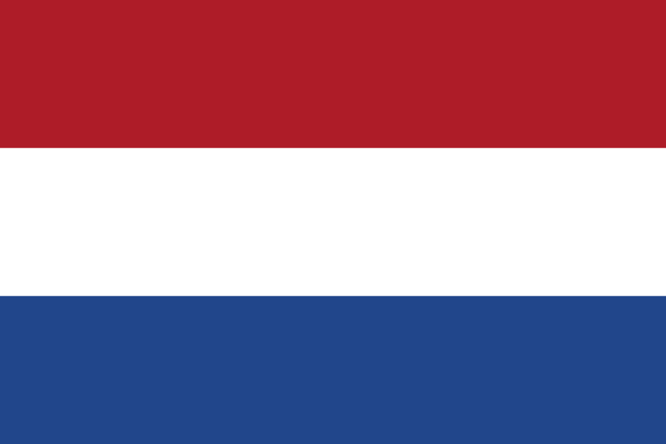
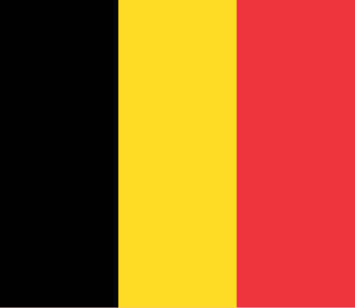
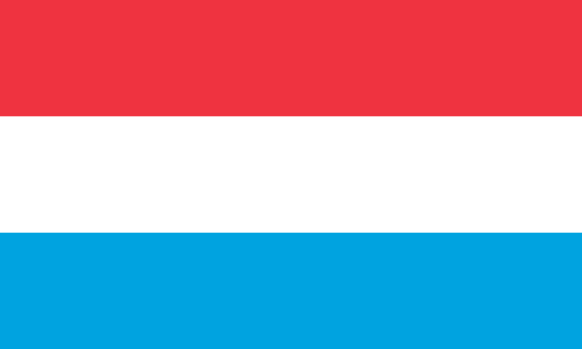
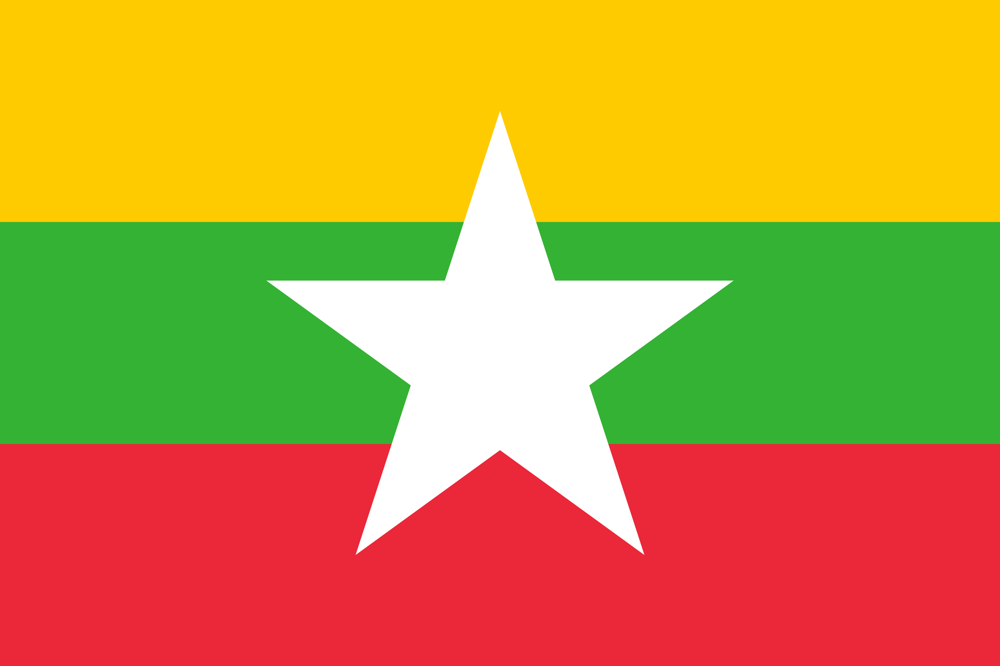

1 / 4
Places that rearranged something inside me. Notes from the road, written while the feeling was still fresh.
Two months of Weser walks, Schnoor lanes, and the Town Musicians — long enough for a city to start feeling like home.
EuropeTwo continents, one day — domes, bazaars, and the Bosphorus in a city that asks you to return.
Europe
Bicycles, canals, and the Martinitoren — the Netherlands' lively northern student city.
EuropeA one-day sprint through postcards — the Eiffel Tower, the Seine, and cafés on every corner.
Europe
The golden Grand-Place, waffles, fries, and chocolate — Brussels in one delicious day.
EuropeTatra peaks, wooden highlander houses, and smoked oscypek cheese in Poland's mountain town.
Europe
Cliffs, fortifications, and the green Grund valley in one of Europe's smallest capitals.
EuropeMarble spires, a glass-domed galleria, and espresso at the bar in Italy's capital of style.
EuropeSheer cliffs, endless waterfalls, and alpine meadows — a Swiss valley that looks like a painting.
EuropeCharles Bridge, the Astronomical Clock, and a sea of red rooftops below the castle.
EuropeMozart, baroque domes, and a hilltop fortress with the Alps on the horizon.
EuropeColourful Nyhavn, bicycles everywhere, and a city that turns hygge into a way of life.
Southeast AsiaMotorbikes, colonial landmarks, and street food on every corner — Saigon never slows down.
Southeast AsiaLong beaches, the Dragon Bridge at night, and the caves of the Marble Mountains.
Southeast AsiaLake, bridges, pine trees, and misty mountains. Mae Hong Son slows you down without asking.
Southeast AsiaMounuments, golden stupas, and Mekong sunsets in Laos' most charming and unhurried capital.
Southeast AsiaMountains, moonlight, and fresh mountain air come together to calm your soul.
Southeast Asia
Freezing winds, ocean of clouds, and 10,200 feet above sea level — Wedo Riya, Chin State's highest peak, was every bit worth the climb.
Southeast AsiaFrom the Mountain Pagoda to misty sunrise ranges, colorful looms, and a cathedral that quiets the soul — Karenni is a quiet gem worth every early morning.
Southeast AsiaMountains, roaring waterfalls, and hearty local flavours in Myanmar's legendary Valley of Rubies.
Southeast AsiaAncient buildings and monasteries whisper tales of a forgotten kingdom.
Southeast AsiaEndless pagodas, misty horizons, and centuries of history — Bagan is the kind of place that humbles you with every glance.
Southeast AsiaBeach, sea, and snorkelling paradise where the lighthouse guides you to pure coastal bliss.
Southeast AsiaFrom a misty viewpoint to a hidden café, a waterfall dip, a eucalyptus boulevard, and a glittering Buddha cave.
East AsiaLandscapes, timeless monuments, and cascading waterfalls in one of Yunnan's most captivating hidden gems.